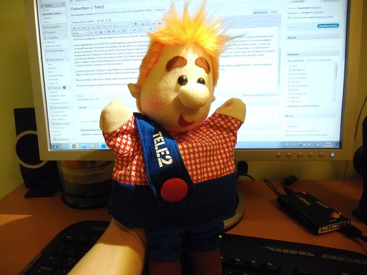
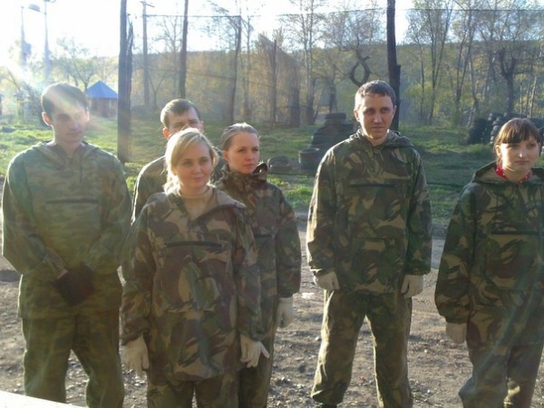
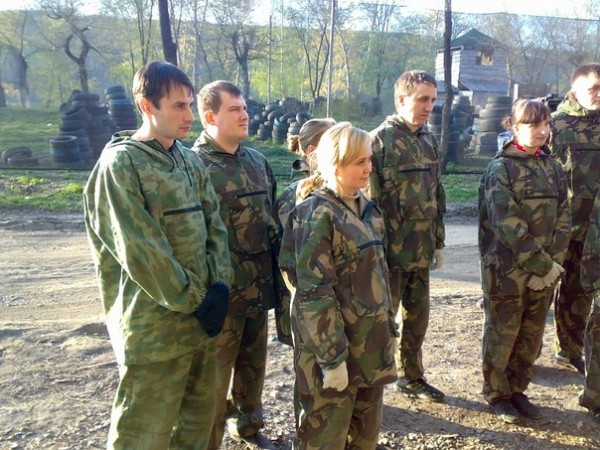
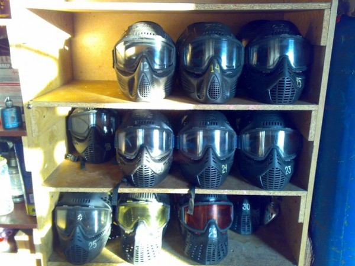
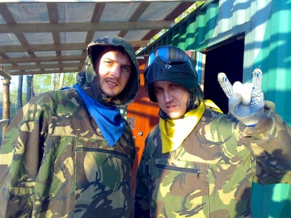
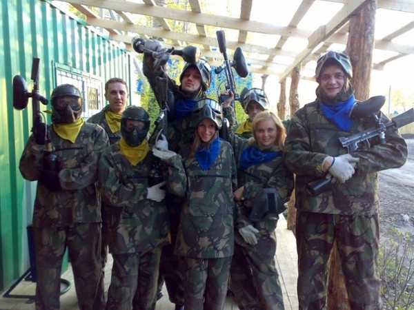
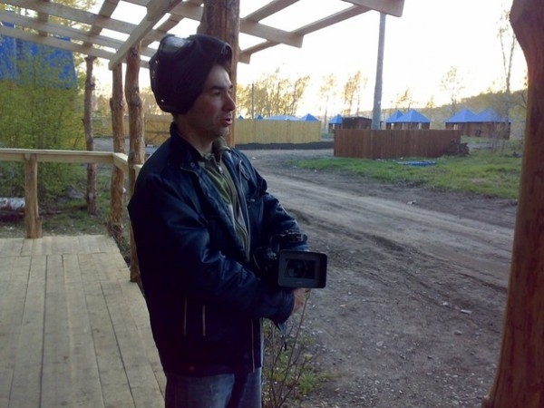

Так получилось, что вчерашний я вечер провёл валяясь в кустах и прячась за шинами на берегу реки Томь. Разумеется ничего криминального у такого законопослушного гражданина как я быть не может (да и заголовок уже обозначен) — я играл в пэйнтбол по приглашению оператора сотовой связи компании Tele2.
Кстати самих представителей Tele2 на поле брани было не очень много. Хрупкая Дарья Каткова, отвечающая в Tele2 за рекламу за PR (именно на её плечи легли все заботы по организации мероприятия), да противоположного телосложения коммерческий директор комании Алексей Сидоров. На встрече была еще, приехавшая из Москвы, PR-менеджер Парфилова Анна, но Москва — почти Европа, там люди приличные и вместе с нами она по земле не валялась, а наблюдала за происходящим со стороны.
Что касается журналистов, то кроме знакомого мне уже Ромы Янченко из МК, были целая группа ребят из телеканала Мой Город, координатор кузбасского Медиаклуба Михайлина Гульсара и руководитель рекламной службы портала А42 Ларионова Ольга, с которой мы раньше, кстати, не были знакомы. Надо отметить, что Ольга в пэйнтбол тоже не играла, а стояла за сеткой с Анной и наверняка обсуждала рекламную политику компаний ;)
Стоит признаться, что пэйнтбольный маркер я держал во второй раз. Причём первый был настолько давно, что не считается. Грозный всезнающий мужчина в ботинках на толстой подошве объяснил нам правила игры. На поле запрещено выходить без маски — говорил он. Пуля летит со скоростью … (тут была какая-то большая цифра) метров в секунду. Поэтому, если пуля попадёт вам в глаз, вы останетесь без глаза. Засчитываются попадания только в туловище. Попадание в ноги, руки, голову за поражение противника не считаются. С расстояния 2-3 метров стрелять в противника не рекомендуется (нужно просто громко сказать «Попадание»), в противном случае противнику будет довольно больно. Последнее правило я нарушил в первой же игре, не ожидавший Алексея в засаде выпустил в него пару желатиновых шаров с расстояния в метр. Алексей правда во второй игре (уже издалека) попал мне в шею и низ живота (самый низ… еще ниже). Но самый низ живота это брюки, а шея — голова, поэтому из игры тогда я не выбыл.
4 боя мы провели «За флаг», противник должен захватить находящийся в центре поля боя флаг и занести его на базу противника. Последний бой был «до последнего шара», или как его назвал инструктор в ботинках на толстой подошве — «больничка». По результатам 5 боёв победила дружба.
Впечатления: пэйнтбол клёвый, пэйнтбол весёлый, пэйнтбол азартный, пэйнтбол — фитнес.
В конце нам еще подарили по банке настоящего шведского варенья из Икеи и настоящему тряпичному шведу.

Так как руки были по локоть в желатине, своих фотографий нет. Фотографии ниже любезно выложены во Вконтакт Ларионовой Ольгой из А42.






Еще раз большое спасибо компании Теле2 за приятные знакомства, физическую нагрузку и заряд положительных эмоций.